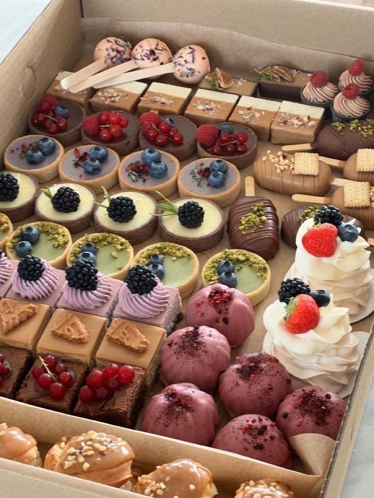

Aprenderás a hacer el famoso pastel imposible,para fascinar a tu familia y amigos con tu increíble talento culinario.Pero,primero hablemos un poco sobre este postre mexicano.El chocoflán,es un postre mexicano con una técnica de horneado bastante ingeniosa,el Baño María. Este postre fue influenciado por la inmigración de los franceses,siendo una demostración de la mecla cultural que existe en México.